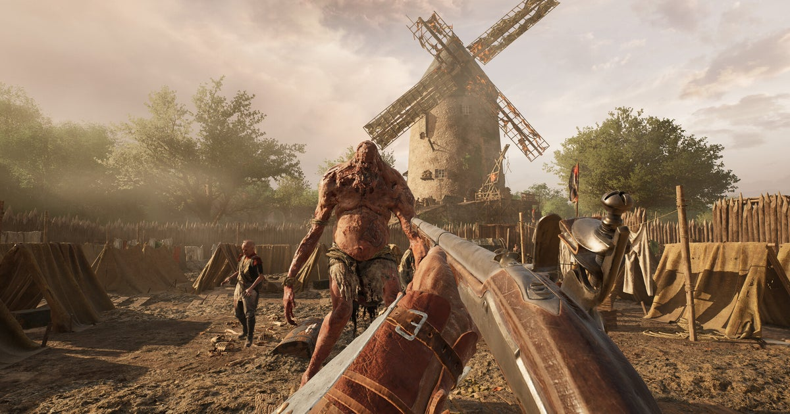

Gaming · 13 Nov 2026
Hell Let Loose's original developers' Napoleonic-era extraction game, Hunger, gets December early access release, and an open beta this month

Good Fun Corp, the studio made up of the original developers behind Hell Let Loose, has finally announced a release date for its anticipated next project: Hunger. The extraction shooter-slasher game enters early access on Steam on 3rd December, and there's good news if you're eager to try it out bef
Multiple independent publishers are reporting on the same development: Hell Let Loose's original developers' Napoleonic-era extraction game, Hunger, gets December early access release, and an open beta this month.
The available reports place the development in the Gaming category. The accounts were compared for agreement on the central event rather than simply shared names or broad topics.
One of the available reports describes the development this way: Good Fun Corp, the studio made up of the original developers behind Hell Let Loose, has finally announced a release date for its anticipated next project: Hunger. The extraction shooter-slasher game enters early access on Steam on 3rd December, and there's good news if you're eager to try it out before then. Read more
Readers should consult the linked source reports for additional context, updates and details that may change as the story develops.
Sources
This article was produced by the C. O. Eric AI Newsroom from the cited sources. It is published only after automated evidence and safety checks.